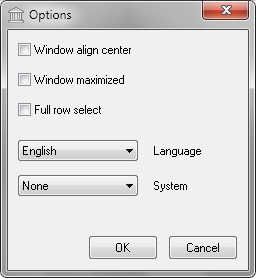

Options window consist of two buttons, three checkbox, two combobox.
| Item | Description |
| Window align center | Set main window center. |
| Window maximized | Switch between maximized and normal window show. |
| Full row select | Select full row in file list. |
| Language | Interface localisation.
After changing language, program restart is required. Two languages available. 1. English. 2. Russian. |
| System | System integration or segregation. Three options are possible. 1. None operation, default. 2. Integration store program settings in registry. Associate archive file extension with program. 3. Segregation clean all program settings from registry. |
| Item | Description |
| OK | Close window and apply settings. |
| Cancel | Close window and return to main window. |